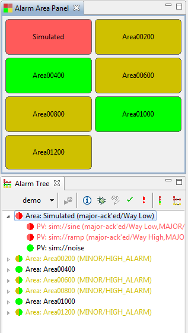
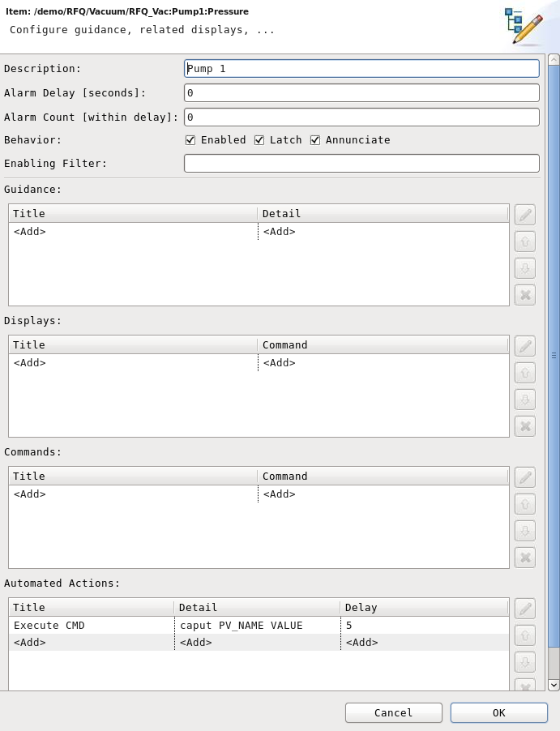

The Alarm System allow users to view and handle the alarms triggered by Process Variables (PVs) on front-end computers (IOCs). To understand the behavior of alarms in the alarm system, please take a few minutes to read about its general principles.
Alarms are not another interlock or protection system. Unlike interlocks, alarms do not trigger an automated response to handle a well understood situation. Instead, alarms inform operators of a problem that can have multiple reasons, a problem that is too complex to be handled automatically, an issue that relies on a qualified operator to find a solution based on experience and skill.
Alarms are supposed to
Operators are expected to acknowledge each active alarm, because the alarm system has no other way of knowing if operators are aware of an alarm. Annunciations for new occurrences of the same alarm are suppressed until the initial alarm is acknowledged, assuming that operators are still handling the first, un-acknowledged alarm instance.
Before acknowledging an alarm, operators can use the alarm GUI to
Alarms are triggered by Process Variables (PVs) on the front-end computers (IOCs). Adding these Trigger PVs to the alarm server configuration generates the actual alarms with an alarm description, guidance information, and links to related operator displays or web pages.
Levels of severity can help users to prioritize their work, especially when many alarms occur at the same time.
There are four alarm severity levels:
The severity of an alarm is provided by the control system trigger PV. It needs to be configured by the IOC engineer.
In addition, each Trigger PV provides an alarm message (status) for each alarm. This message can indicate if the alarm is caused by some value being too high or too low, but it cannot replace the more elaborate guidance information that needs to be configured within the alarm system user interface.
There are two types of severity and status for each alarm trigger:
The "Alarm Severity" can differ from the "Current Severity" when the underlying alarm PV already recovered but the alarm server was configured to "latch" the alarm until operator acknowledgement.
Fundamentally, an alarm can have 3 states:
In reality, alarms are more complicated because of their very nature. If the reason for an alarm was known, it could have been fixed long ago, or automated countermeasures would have been implemented. But an alarm is an alarm because it requires human intelligence to analyze and handle it. Therefore alarm trigger PVs will sometimes go in and out of alarm for some time, or only show a brief alarm which seems to recover on its own. One purpose of the alarm system is to catch even brief alarms, and to reduce the noise from alarms that cycle between OK and some alarm state.
Alarm are typically configured to "latch" and behave as shown in the first state diagram. Assume that the alarm is initially OK. As soon as an alarm trigger PV sends for example a MINOR alarm severity, the alarm system will latch the time and value of that occurrence and display the alarm in the user interface. If the alarm was configured for annunciation, the alarm description will be annunciated.
Ideally, an operator investigates the alarm, fixes the underlying reason, acknowledges the alarm, the PV returns to OK and the alarm clears. In reality, other things can happen. The PV might only cause a brief nuisance trip, then quickly return to OK on its own. Or the PV might goes in and out of alarm. Either case really indicates a problem in the alarm trigger PV. Still, the alarm system latches the alarm at the original occurrence and annunciates only once to reduce 'chatter'. If the alarm re-occurs while the original alarm is still not acknowledged, it is not annunciated again because we assume that operators are still investigating the initial alarm, or just too busy to look at any alarms right now. In either case, another annunciation would only cause noise. The alarm system can also be configured with delays to only alarm if the trigger PV persists for a certain time, which can be used as a workaround for less than perfect alarm trigger PVs.
When a MINOR alarm is followed by a MAJOR alarm, or generally a higher level alarm, that causes another annunciation because it is considered a different, more important situation. On the other hand, if an INVALID alarm relaxes to MAJOR or generally a lower severity, the display will update to reflect the 'current' severity but the alarm severity remains latched to the highest alarm level.
Acknowledging an alarm means to acknowledge the current alarm severity.
Acknowledge Example 1: A trigger PV goes MAJOR, alarm system goes into MAJOR alarm. When acknowledged, the alarm is MAJOR-acknowledged. Should the PV relax to MINOR, the current state of the alarm will be MINOR, but the overall alarm state stays at MAJOR-acknowledged. If the PV actually cycles between MINOR and MAJOR, there will be no new annuncuations because the operator already acknowledged the MAJOR alarm. Finally, once the PV clears to OK, all will be OK.
Acknowledge Example 2: A trigger PV goes MAJOR, alarm system goes into MAJOR alarm. Operator looks at the problem, improves the situation but can't fully fix it, yet, so the PV stays in MINOR alarm. The alarm system will show that there was a MAJOR alarm, and right now the PV is still in MINOR alarm. When acknowledged, the alarm system state changes to MINOR-acknowledged. If the PV clears to OK, all will be OK. On the other hand, should the PV go back into MAJOR alarm, this would cause a new annunciation because we only acknowledged when the PV was at a MINOR severity level.
Acknowledged alarms are less visible in the alarm system user interface so that new, not-yet-acknowledged alarms are more obvious. Operators can manually un-acknowledged alarms, which might be useful to make them more visible again when trying to decide how to handle several alarms.
In summary, acknowledging an alarm means to acknowledge the current severity of the PV, and an alarm will fully 'clear', i.e. disappear from the alarm table when the alarm trigger PV returns to OK and the alarm is acknowledged.
The second diagram shows the behavior of alarms that are not configured to latch. You will notice that it is very similar to the latched alarm behavior except that non-latching alarms do not require acknowledgement. They may be acknowledged to remove them from the list of 'active' alarms, but they clear automatically once the trigger PV relaxes to "OK" without requiring a manual alarm acknowledgement.
Typical use cases for non-latching alarms:
For alarms configured to annunciate, whenever a new alarm or a higher severity alarm triggers, the severity and description of the alarm will be annunciated.
During machine maintenance, devices are turned off on purpose, but related alarms were not disabled, resulting in numerous nuisance alarms.
It is impossible for the computer to decide if an alarm should be disabled automatically. IOC engineers can add logic to automatically suppress alarms, but this is a rather complex and time consuming task.
Alarms can be disabled manually in the Alarm PV Configuration. Reports of disabled alarms can help to review which alarms were disabled at what time, to avoid leaving alarms disabled by accident. But this process is again tedious.
While nuisance alarms during maintenance periods are hard to avoid, one common source of alarms are INVALID alarms caused by IOCs, PLCs or network equipment being turned off. The 'Maintenance' Mode of the alarm server can help handle the flurry of INVALID alarms as follows:
The (acknowledged) INVALID alarms are still displayed, but the missing annunciation
reduces chatter in the control room.
The automatic acknowledgement moves them off the list of active alarms,
reducing visual clutter.
The third point asserts that possibly valid alarms after a device
is again accessible are not forgotten:
In 'normal' mode, a transition from INVALID(-acknowledged) to MAJOR alarm
would not cause an annunciation because there was already a more severe alarm level,
INVALID, and the device situation actually improved from INVALID to MAJOR.
In 'maintenance' mode, the INVALID was automatically acknowledged,
and a MAJOR alarm is now considered a new situation that the operator
should review and manually acknowledge.
Maintenance mode is enabled or disabled via this icon in the alarm tree and table GUI, which also indicates the current mode:
Technically, the alarm system consists of several elements:
This manual focuses on how to use Alarm System GUI, not on the setup of the alarm server.

Especially for first-time users it might be advisable to switch to the designated Alarm Perspective, which results in a predefined arrangement of the Alarm Tree and Alarm Table.
CSS/Alarm menu,
access the Alarm Perspective by right-clicking in the Alarm Table or Tree
and selecting Alarm Perspective. This action will switch to the
Alarm Perspective, or - if it was already active - allow you to reset it to
its original state, in case windows have been rearranged.
You can simply close, minimize or maximize an Alarm Table or Alarm Tree window via the usual icon in the window title bar or the context menu of the window title bar. You can also adjust the size of each window.

The Alarm Tree provides an approach to browse the alarm configuration components
and their related alarm status in a tree-like structure, which by default includes
all configured alarms, active or not.
You can open it via the menu CSS/Alarm/Alarm Tree.
The Alarm Tree is synchronized with the configuration in the RDB. When you change the configuration from within the Alarm Tree user interface, the configuration in RDB will be updated, and vice versa.
The Alarm Tree configuration is hierarchically arranged by
In addition to displaying the alarm configuration hierarchy, the alarm tree also shows the current state of each item in several ways.
The image shows an example where a MINOR/HIGH alarm occured and has in fact already been acknowledged ("minor-ack'ed/HIGH_ALARM"), but the trigger PV still exhibits the same MINOR/HIGH_ALARM, so the underlying issue has obviously not been fixed to fully clear the alarm.
In addition, a MAJOR/LINK_ALARM occurred, has not been acknowledged, and is still active. A MAJOR/LOLO_ALARM occurred, but the alarm trigger PV has already cleared.
For each item in alarm, an annotation shows the severity and status of the alarm state, i.e. the most severe alarm that has happened and not fully cleared. For area, system and sub-system items this represents the state of the hierarchical sub-entries with the highest alarm severity.
(Alarm Severity/Alarm Status)
For alarm trigger PVs, this includes the current state of the PV:
(Alarm Severity/Alarm Status, Current PV Severity/Current Status)
Besides the annotation there is also an alarm state indicator to the left of each item, a color-coded representation of the severities. The color of the left half of the indicator indicates the alarm severity, while the right half indicates the current severity.
Acknowledged alarm severities are slightly darker than un-acknowledged severities.
Finally, a tool-tip that appears when resting the mouse pointer over an alarm gives a multiple-line textual description of the alarm.
The toolbar on top of Alarm Tree provides basic functions for the tree and selected items.
The common context menu options for all types of component in the tree are:
For non-PV items, an additional menu option is available:
For PV items, two additional menu options are available:
CSS: From this menu, you can access general CSS functions for the selected PVs.
Selected alarms can be 'dragged' out of the alarm tree into another program that accepts string drops. For example, one can drag alarms into most email tools or the web interface to an elog system. The dragged text will include the alarm PV, description, and its current state.
The Alarm Table provides a tabular view of currently active alarms.
It only shows alarms that actually triggered.
You can open it via the menu: CSS/Alarm/Alarm Table

Each active alarm has several properties:
The CSS Alarm Table allows sorting by any of the above properties by clicking the corresponded property name on the column header.
The Alarm Table is split into two parts for displaying current alarms (unacknowledged alarms) and acknowledged alarms respectively.
For the details about how alarm severity jumps between different states, please refer to the Alarm Severity States Diagram
The toolbar on top of Alarm Table provides the functions of
"Acknowledge"  and
"Un-Acknowledge"
and
"Un-Acknowledge"  for the selected items in the table.
for the selected items in the table.
You can enter a PV name or part of an alarm description to select all matching PVs in the alarm table.
The filter expression can contain these wild-cards:
The filter expression is not case-sensitive.
Example Filter Expressions:
Most of the context menu options are also applicable for multiple items. In this case, the "Guidance messages", "Related display" and "Command" for the selected items will be merged. You can select multiple items by holding Ctrl or Shift key.
CSS: From this menu, you can access general CSS functions for the selected PVs.Selected alarms can be 'dragged' out of the alarm table into another program that accepts string drops. For example, one can drag alarms into most email tools or the web interface to an elog system. The dragged text will include the alarm PV, description, and its current state.
The Alarm Area Panel is a top-level display of the current alarm state. A preference setting of the panel is used to configure which level of the alarm tree hierarchy it should display. 
It will typically be used to display the first level of the alarm hierarchy, that is all Area components of the alarm tree. For each area, it displays the name, coloring the panel to indicate the alarm state of that area.
The tool can also be used to display a single panel with the alarm state of the overall alarm tree, i.e. the root element, by configuring it to use level 0 of the alarm tree hierarchy. When set to level 2 of the alarm tree, it will display all System components. With level 3 it would display all Sub-System components, but this and higher alarm tree components are not useful in practice.
The context menu of a panel item allows access to the alarm tree, opening the alarm tree view and focusing on the respecive alarm tree element. The context menu also allows acknowledge/un-acknowledge of the alarm tree item and all the alarm tree elements below it.
The tool has the following preference settings:

The Alarm System has numerous preferences which can be set for the GUI
client via the menu CSS/Preferences..., then navigating
to CSS Applications/Alarm/Alarm System:
For proper operation of the alarm system these settings must match corresponding settings of the alarm server. They should probably not be configured by end users via the preference panel but instead set by the system administrator via appropriate "Default Settings", see below.
-pluginCustomization command line option.
Finally, each end user can use the CSS/Preferences menu item to
interactively adjust most settings. Those changes are stored in the
workspace directory under
{Workspace}/.metadata/.plugins/org.eclipse.core.runtime/.settings
To edit the overall alarm configuration, that is to add components to the hierarchical alarm tree, including Alarm Trigger PVs, or to rearrange the alarm tree layout, use the context menu of the Alarm Tree.
The context menu entry "Configure item" opens a dialog box similar to the one shown on the right. The following explains configuration elements common to all alarm tree items. The next section will elaborate on specifics of Alarm Trigger PVs.
The item name displayed at the top of the dialog is the hierarchical path to item. The item name is set when adding the item to the alarm configuration. It cannot be modified within this dialog, but there are are options in the context menu of the alarm tree to rename an item or to move it to another location in the alarm tree.
A list of guidance messages for this item. Note that items also "inherit" all guidance messages of the higher-level components (System, Subsystem, ...) under which they are listed, i.e. their "parent" components from the alarm configuration hierarchy.
Each guidance is separated into two parts:
Tip: If the guidance is very short and fits into the title, it is sufficient to only enter the title. Whenever you only configure the title and leave the details empty, or only configure the details and leave the title empty, this implies that the respective other part is the same as the part you configured.
A list of related displays. Supported formats:
/CSS/Share/DisplayFiles/Section/TheFile.opi"/CSS/Share/My Display Files/TheFile.opi"/CSS/Share/DisplayFiles/Section/TheFile.opi "macro1=Value 1, macro2=Another Value"opi:http://my_display_file_server/get_display.cgi?name=TheFile.opihttp://some.web.server/page/foo.html
file:/Path/to/the_file.extension
startedm -m macro=value some_screenAs with guidance, each display item is separated into "Title" and the "Command" which in this case is the actual related display link.
A list of commands that the user might want to invoke. Enter a suitable command-line for executing the command, for example
/usr/local/bin/do_something MyPVName "another parameter"
The command itself must either be on the operating system path ($PATH in Unix) as it was set when CSS was started, or the command name is listed with its full path as shown in the example above.
Quotes (") can be used to include spaces inside an argument.
The command will be executed with the "current directory" set to the "Command Directory" that is configured in the alarm system preferences
org.csstudio.alarm.beast/command_directory. Note that the commands are executed by the operating system that runs the notfier. Commands in the
command_directorymay not be executed unless the PATH variable of the operating system includes the current directory ".", the command itself is specified as "./the_command" to select the current directory as set via the
command_directory, or the PATH lists the full path to the
command_directory.
A suggested setup would probably place all alarm system related
commands in a directory like /usr/local/css/alarm_scripts,
include that in the operating system path and also set the
"Command Directory" to it.
If the command fails to execute, this will be displayed in a dialog box. Otherwise the program is allowed to run unattended, i.e. the alarm GUI does not wait for the command to finish.
As with guidance and related displays, each command item is separated into "Title" and the "Command" which in this case is the actual command to invoke.
If alarms persist for a certain time without being acknowledged or cleared, and automated notification can be generated.
If you configure a notification for an alarm trigger PV, the default message will contain the alarm info for that PV. If you configure a notification for a system or area, the default message will list the PVs in alarm below that section of the alarm tree.
The configuration of an automated notification has three parts:
The automated notifications are performed by a designated "alarm-notifier" that must be running in parallel to the alarm server.
Email notifications start with "mailto:", using the RFC 6068 URL schema.
Examples:
mailto:user@my.org
mailto:list1@example.com,list2@example.fr
mailto:list1@example.com;list2@example.fr;list3@example.fr
mailto:user1@my.org?cc=support@my.org&bcc=john.doe@gmail.com
mailto:user@my.org?cc=rf@my.org&subject=*RF Source 1 in error&body={0} Alarm raised - Water below {1} m3
Within the configuration, the text {0} will be replaced with the alarm severity
and {1} with the value that triggered the alarm.
SMS notifications start with "sms:", using the RFC 3966 URL schema. It will send an email at the following adresse: [sms:phone_number(,phone_number)*]. This formatting need to be handled by the email gateway.
Examples:
sms: +33 4 42 17 64 21, +33 6 03 74 36 61; +33 4 42 17 61 08
sms: +33 6 03 74 36 61?body={0} Alarm raised - Water below {1} m3
Within the configuration, the text {0} will be replaced with the alarm severity
and {1} with the value that triggered the alarm.
The prefix "cmd:" selects an external command to be executed. Examples:
Examples:
cmd:caput SomePV 1 cmd:my_notifier *
Within the configuration, the text * will be replaced with a list
of alarm PVs and alarm severities.
The command is executed with the working directory defined by the preference
org.csstudio.alarm.beast/command_directoryof the notifier.
Several commands can be executed one after an other in the same automated notification using quotes and ';' as separators.
Example:
"mailto:list1@example.com,list2@example.fr";"cmd:caput SomePV 1"
For alarm trigger PVs, the configuration explained in the previous section contains additional elements that are specific to PVs.
The last section of the item name displayed at the top of the dialog must be a PV name understood by the control system. The PV name is set when adding the PV to the alarm configuration. The PV name cannot be modified within this dialog, but there are are options in the context menu of the alarm tree to rename the PV or to move it to another location in the alarm tree.
The PV's description should be more human-readable than the raw PV name. It is displayed with the alarm and also used for annunciation.
Check the annunciation description further below for details on how the description is used for the annunciation of alarms.
Per default all alarms are enabled. By de-selecting the "enabled" check-box the alarm server can be configured to ignore alarms from this PV.
This is meant as a temporary fix, for example to handle a broken sensor that causes erroneous alarms. Disabled alarms should be reviewed periodically and then either removed from the alarm configuration or fixed so that they can be re-enabled.
The latching behavior defines how the alarm server handles a PV that goes into an alarm state, and then recovers. When configured to "latch", the alarm server remembers the highest alarm severity of the PV until it is manually acknowledged.
When a PV is configured to "annunciate", the alarm server will send the PV's description to the annunciation system whenever the PV reaches a non-OK severity.
Per default, the alarm server will react as soon as it notices a non-OK alarm severity. When adding a delay greater than zero, specified in seconds, it will only react when the alarm severity remains for at least this time. When an additional alarm count greater than zero is specified, it will react to alarms that either outlast the delay, or happen at least "count" times within the delay.
Both these options can reduce the amount of "nuisance" alarms from noisy PVs, but in practice it is always best to cure the problem at the source through adequate dead-bands or smoothing.
A filter expression can be used to enable or disable alarms automatically. When entering a filter expression, the previously described "enable" field is ignored.
The filter expression can be something like
some_other_pv > 5
to only enable the alarm when the other PV has a value above 5.
This feature was added to ease the transition from other alarm handling systems. Ideally, state-based alarms are handled on the front-end computer by adding logic that prevents the alarm from being generated, instead of generating an alarm but then disabling it in the alarm server.
Also note a shortcoming of the current implementation:
The Alarm Server only subscribes to PV value updates for alarm
changes, and this includes the PVs used to compute the filter
expression.
An alarm expression like some_other_pv > 5 will not
be evaluated for each change in the value of some_other_pv;
it will only be evaluated for changes in the alarm state
of some_other_pv, so the value changes used in the filter
expression must also be alarm state changes of some_other_pv!
For alarms that are configured to be annunciated, the alarm server sends an annunciation request to the annunciator.
The annunciation is performed by is either the Annunciator view included in the CSS alarm user interface, or the standalone Annunciator tool. In the control room, at least one instance of these annunciation tools should be running on a designated alarm OPI at all times.
The CSS Annunciator included in CSS is started via the menu
CSS/Alarm/Annunciator and has to remain visible to function.
The Annunciator is also available as standalone tool. While it has to be launched from the command-line, separate from the CSS GUI, its advantage lies in the fact that it continues to annunciate even when the CSS GUI is closed. It will annunciate independently from alarm table or -tree displays.
It is usually launched by a shell command
annunciator
By default, the alarm server will use the "Description" of an alarm for annunciation, prefixed by the alarm severity.
For example, a MAJOR alarm on a PV with Description "Low Water Pressure" will result in an annunciation
"MAJOR alarm: Low Water Pressure"
When prefixed with an asterisk character '*', the alarm server will use the description as given. It will not prefix it with the alarm severity.
A PV with Description "*Low Water Pressure" thus results in just announcing
"Low Water Pressure"
In addition, descriptions starting with '*' can include the following formatting elements:
For example, a PV with description "*{0} alarm: Low Water Pressure" would again result in an annunciation
"MAJOR alarm: Low Water Pressure"The effect would be the same as having used the default annunciation format without "*...".
By using the "*..." format, however, you can also use descriptions like "*{0} water alarm, level is {1} gallons" which will result in an annunciation similar to
"MAJOR water alarm, level is 3.142 gallons"
The format elements can be in any order. For example, the value can be used before the alarm severity. The description "*Water below {1} gallons, {0} alarm" will result in an annunciation similar to
"Water below 3.142 gallons, MAJOR alarm"
Fundamentally, messages are annunciated in the order of arrival. When several messages arrive at almost the same time, or more messages arrive while the first message is annunciated, those are ordered by severity, most severe first.
When many alarms occur at the same time, this could result in a long stream of voice annunciation. Operators, on the other hand, probably don't need to hear every single alarm annunciated as much as they need to be alerted to the fact that many alarms happened, so they can use their judgment to determine which one is most important.
The annunciator therefore has a message count threshold (default 3): Assuming that 10 more messages arrive after annunciating the first message, exceeding the threshold of 3, the tool will annunciate
"There are ten more messages"instead of annunciating each individual message.
For alarms deemed too important to be suppressed by the annunciation throttle, the Description can be prefixed with a "!":
!The sky is falling
In case the alarm severity should not be included in the annunciation, but the annunciation should always happen and not be filtered by the annunciation throttle, use this format:
*!The sky is falling
Either '*!' as shown with '*' first, then '!', or '!*' are allowed. The '*' tells the alarm server to suppress the alarm severity because a custom format is used, the '!' instructs the annunciator to exclude this message from the message throttle.
The Annunciator has its own preference settings. In principle, this would allow use of one annunciator for multiple alarm systems.
# File of translations
# Format:
# some_regular_expression_pattern = translation
INVALID=in valid
MEBT=mebbit
To avoid confusion, though, it's usually better to not use
translations and instead change the annunication text in the Alarm Server
configuration.